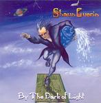

| Artist: | Shaun Guerin |
| Title: | By The Dark Of Light |
| Label: | Clearlight Music C8M-400 |
| Length(s): | 50 minutes |
| Year(s) of release: | 2002 |
| Month of review: | [07/2005] |
| 1) | By The Dark Of Light | 4.47 |
| 2) | This Is Not My World | 4.28 |
| 3) | France | 5.37 |
| 4) | Run To Fall | 6.01 |
| 5) | She's Sad | 4.01 |
| 6) | Victory | 5.07 |
| 7) | Sing My Prayers | 6.18 |
| 8) | Son Of Gorp | 5.17 |
| 9) | No Misery | 5.08 |
| 10) | Crazy | 2.57 |
France for instance is a friendly sounding instrumental led by synth melodies at times, guitar at others. The track does have a melody, but it's not dominant. It has nice bits and things, but it doesn't seem to really lead somewhere. There is no way I can say why exactly these 337 seconds are grouped into one track. Not with the changes in melody and style even. This goes for some other instrumental tracks as well (Run To Fall, Victory). Now, of course progressive music is known for its frequent changes in melody and time signature, however, but Shaun seems to lose the plot here every once in a while (or at least I do).
This problem of poor cohesion can also be heard in most vocal tracks, such as Sing My Prayers or This Is Not My World. The compositions tend to lean on vocal melody, the instruments adding colour. This in itself is a good enough idea. Unfortunately Shaun's voice -though pretty decent- can't always deliver when asked the question. This combined with the lack of compositional cohesion adds up to wandering attention.
She's Sad is clearly a vocal track, also mustering some drama. The music fits in well with the sombre lyrics, although bordering on being overly dramatic.
Closer Crazy reminds me of a track off UK's self titled debut, Presto Vivace probably. The track starts out pretty fast, sort of key staccato. The synths later on in the track are sort of Eddie Jobson, too. But for some reason I don't like it. Of course, after a minute or the composition wanders off into neverland, but there's something else that bothers me. Maybe as simple as the specific synth sound used.
After all that though I still find that when I just let the album play, not listening to it critically it sounds pretty good. There is a bit of flow going on there that could make this release a decent addition to the collection of those relishing the more instrumental approach to progressive music.